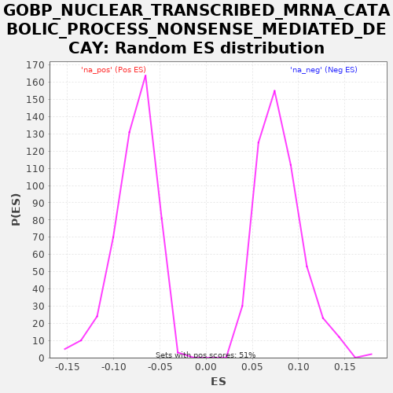

| | | Dataset | A_X_tradeoff |
| Phenotype | NoPhenotypeAvailable |
| Upregulated in class | na_neg |
| GeneSet | GOBP_NUCLEAR_TRANSCRIBED_MRNA_CATABOLIC_PROCESS_NONSENSE_MEDIATED_DECAY |
| Enrichment Score (ES) | -0.41330817 |
| Normalized Enrichment Score (NES) | -5.3568473 |
| Nominal p-value | 0.0 |
| FDR q-value | 0.0 |
| FWER p-Value | 0.0 |
Table: GSEA Results Summary
 Fig 1: Enrichment plot: GOBP_NUCLEAR_TRANSCRIBED_MRNA_CATABOLIC_PROCESS_NONSENSE_MEDIATED_DECAY
Fig 1: Enrichment plot: GOBP_NUCLEAR_TRANSCRIBED_MRNA_CATABOLIC_PROCESS_NONSENSE_MEDIATED_DECAY
Profile of the Running ES Score & Positions of GeneSet Members on the Rank Ordered List
| SYMBOL | RANK IN GENE LIST | RANK METRIC SCORE | RUNNING ES | CORE ENRICHMENT | | 1 | RPL34 | 268 | -0.002 | -0.0054 | No |
| 2 | PNLDC1 | 1042 | -0.006 | -0.0369 | No |
| 3 | NCBP2 | 3783 | -0.023 | -0.1701 | No |
| 4 | EIF4A3 | 4315 | -0.027 | -0.1891 | No |
| 5 | RPS27 | 4778 | -0.031 | -0.2045 | No |
| 6 | RPLP2 | 5596 | -0.040 | -0.2383 | No |
| 7 | RPL22 | 6063 | -0.046 | -0.2539 | No |
| 8 | SKIV2L | 7532 | -0.066 | -0.3214 | No |
| 9 | RPS15A | 7548 | -0.066 | -0.3137 | No |
| 10 | MAGOH | 8169 | -0.076 | -0.3373 | No |
| 11 | RPL35A | 8249 | -0.077 | -0.3329 | No |
| 12 | RPL27 | 8279 | -0.078 | -0.3259 | No |
| 13 | RPS25 | 8493 | -0.081 | -0.3285 | No |
| 14 | RPL32 | 8887 | -0.088 | -0.3403 | No |
| 15 | RPS18 | 9081 | -0.091 | -0.3418 | No |
| 16 | RPL21 | 9266 | -0.095 | -0.3429 | No |
| 17 | RPL36A | 9602 | -0.101 | -0.3517 | No |
| 18 | HELZ2 | 9759 | -0.104 | -0.3513 | No |
| 19 | DCP1A | 10026 | -0.110 | -0.3566 | No |
| 20 | RPS26 | 10034 | -0.110 | -0.3485 | No |
| 21 | RPL41 | 10780 | -0.126 | -0.3785 | No |
| 22 | NBAS | 10827 | -0.127 | -0.3724 | No |
| 23 | RPL37A | 11442 | -0.143 | -0.3957 | No |
| 24 | SECISBP2 | 11783 | -0.151 | -0.4048 | Yes |
| 25 | RPS7 | 11813 | -0.152 | -0.3979 | Yes |
| 26 | RPL23A | 11843 | -0.153 | -0.3909 | Yes |
| 27 | DCP1B | 11924 | -0.155 | -0.3865 | Yes |
| 28 | RPLP1 | 11931 | -0.155 | -0.3784 | Yes |
| 29 | RPS28 | 12023 | -0.157 | -0.3746 | Yes |
| 30 | RPS15 | 12236 | -0.163 | -0.3771 | Yes |
| 31 | RPL36 | 12460 | -0.169 | -0.3802 | Yes |
| 32 | GSPT1 | 12464 | -0.169 | -0.3718 | Yes |
| 33 | RPL39 | 12548 | -0.172 | -0.3677 | Yes |
| 34 | UPF3A | 13022 | -0.185 | -0.3837 | Yes |
| 35 | RPS13 | 13151 | -0.189 | -0.3818 | Yes |
| 36 | RPL31 | 13288 | -0.193 | -0.3804 | Yes |
| 37 | SMG8 | 13339 | -0.195 | -0.3745 | Yes |
| 38 | RPL26 | 13342 | -0.195 | -0.3661 | Yes |
| 39 | DHX34 | 13760 | -0.209 | -0.3792 | Yes |
| 40 | CTIF | 14144 | -0.222 | -0.3905 | Yes |
| 41 | RPL13A | 14317 | -0.229 | -0.3909 | Yes |
| 42 | PYM1 | 14334 | -0.230 | -0.3833 | Yes |
| 43 | GSPT2 | 14547 | -0.238 | -0.3858 | Yes |
| 44 | SMG9 | 14733 | -0.246 | -0.3869 | Yes |
| 45 | EXOSC10 | 14763 | -0.248 | -0.3799 | Yes |
| 46 | RPS24 | 14855 | -0.252 | -0.3761 | Yes |
| 47 | RPL37 | 14873 | -0.252 | -0.3685 | Yes |
| 48 | DCP2 | 14970 | -0.257 | -0.3650 | Yes |
| 49 | PNRC2 | 14972 | -0.257 | -0.3566 | Yes |
| 50 | PPP2CA | 15030 | -0.259 | -0.3511 | Yes |
| 51 | RPL23 | 15048 | -0.260 | -0.3435 | Yes |
| 52 | RNPS1 | 15079 | -0.261 | -0.3366 | Yes |
| 53 | PARN | 15211 | -0.267 | -0.3349 | Yes |
| 54 | RBM8A | 15430 | -0.277 | -0.3377 | Yes |
| 55 | PPP2R1A | 15753 | -0.293 | -0.3458 | Yes |
| 56 | MAGOHB | 15890 | -0.300 | -0.3444 | Yes |
| 57 | SMG5 | 15936 | -0.303 | -0.3383 | Yes |
| 58 | RPS17 | 16081 | -0.310 | -0.3372 | Yes |
| 59 | RPS10 | 16198 | -0.316 | -0.3348 | Yes |
| 60 | RPL38 | 16414 | -0.329 | -0.3374 | Yes |
| 61 | RPL17 | 16459 | -0.332 | -0.3312 | Yes |
| 62 | RPS23 | 16553 | -0.338 | -0.3275 | Yes |
| 63 | RPL30 | 16606 | -0.342 | -0.3218 | Yes |
| 64 | SMG7 | 16656 | -0.346 | -0.3158 | Yes |
| 65 | ETF1 | 16847 | -0.359 | -0.3172 | Yes |
| 66 | UPF2 | 16914 | -0.364 | -0.3121 | Yes |
| 67 | SMG1 | 16916 | -0.364 | -0.3037 | Yes |
| 68 | RPS14 | 16936 | -0.365 | -0.2962 | Yes |
| 69 | RPS21 | 17046 | -0.375 | -0.2934 | Yes |
| 70 | RPS27A | 17175 | -0.385 | -0.2915 | Yes |
| 71 | RPS11 | 17235 | -0.390 | -0.2861 | Yes |
| 72 | RPL5 | 17297 | -0.396 | -0.2808 | Yes |
| 73 | RPL9 | 17326 | -0.398 | -0.2737 | Yes |
| 74 | RPS19 | 17343 | -0.400 | -0.2661 | Yes |
| 75 | NCBP1 | 17365 | -0.403 | -0.2587 | Yes |
| 76 | UBA52 | 17497 | -0.417 | -0.2570 | Yes |
| 77 | RPL35 | 17559 | -0.423 | -0.2517 | Yes |
| 78 | RPL4 | 17565 | -0.423 | -0.2435 | Yes |
| 79 | EIF3E | 17633 | -0.430 | -0.2384 | Yes |
| 80 | RPL14 | 17697 | -0.436 | -0.2332 | Yes |
| 81 | RPS20 | 17720 | -0.439 | -0.2259 | Yes |
| 82 | PPP2R2A | 17804 | -0.449 | -0.2217 | Yes |
| 83 | UPF3B | 17868 | -0.457 | -0.2165 | Yes |
| 84 | UPF1 | 18119 | -0.494 | -0.2210 | Yes |
| 85 | RPL24 | 18170 | -0.503 | -0.2151 | Yes |
| 86 | RPL28 | 18184 | -0.505 | -0.2073 | Yes |
| 87 | RPS3 | 18188 | -0.505 | -0.1989 | Yes |
| 88 | RPL18A | 18213 | -0.510 | -0.1917 | Yes |
| 89 | RPS8 | 18232 | -0.513 | -0.1842 | Yes |
| 90 | CASC3 | 18279 | -0.523 | -0.1781 | Yes |
| 91 | RPL3 | 18282 | -0.523 | -0.1697 | Yes |
| 92 | SMG6 | 18361 | -0.539 | -0.1653 | Yes |
| 93 | RPS6 | 18455 | -0.558 | -0.1616 | Yes |
| 94 | RPL19 | 18603 | -0.602 | -0.1607 | Yes |
| 95 | RPS12 | 18636 | -0.611 | -0.1539 | Yes |
| 96 | RPS29 | 18651 | -0.614 | -0.1462 | Yes |
| 97 | RPL10A | 18653 | -0.614 | -0.1377 | Yes |
| 98 | RPL27A | 18718 | -0.636 | -0.1326 | Yes |
| 99 | RPL7A | 18757 | -0.649 | -0.1261 | Yes |
| 100 | RPS16 | 18764 | -0.651 | -0.1179 | Yes |
| 101 | EIF4G1 | 18773 | -0.654 | -0.1098 | Yes |
| 102 | RPL12 | 18798 | -0.667 | -0.1026 | Yes |
| 103 | RPL11 | 18799 | -0.668 | -0.0941 | Yes |
| 104 | RPL18 | 18837 | -0.688 | -0.0876 | Yes |
| 105 | RPL6 | 18922 | -0.729 | -0.0834 | Yes |
| 106 | RPS4X | 18940 | -0.743 | -0.0758 | Yes |
| 107 | RPL29 | 18962 | -0.753 | -0.0684 | Yes |
| 108 | RPLP0 | 19062 | -0.812 | -0.0651 | Yes |
| 109 | RPL15 | 19082 | -0.837 | -0.0576 | Yes |
| 110 | RPS5 | 19091 | -0.844 | -0.0495 | Yes |
| 111 | RPL7 | 19110 | -0.870 | -0.0420 | Yes |
| 112 | PABPC1 | 19113 | -0.873 | -0.0336 | Yes |
| 113 | RPSA | 19149 | -0.914 | -0.0270 | Yes |
| 114 | RPS9 | 19183 | -0.943 | -0.0202 | Yes |
| 115 | RPL13 | 19201 | -0.973 | -0.0126 | Yes |
| 116 | RPL10 | 19217 | -0.991 | -0.0049 | Yes |
| 117 | RPL8 | 19267 | -1.060 | 0.0010 | Yes |
| 118 | RPS2 | 19403 | -1.450 | 0.0025 | Yes |
Table: GSEA details [plain text format]

Fig 2: GOBP_NUCLEAR_TRANSCRIBED_MRNA_CATABOLIC_PROCESS_NONSENSE_MEDIATED_DECAY: Random ES distribution
Gene set null distribution of ES for GOBP_NUCLEAR_TRANSCRIBED_MRNA_CATABOLIC_PROCESS_NONSENSE_MEDIATED_DECAY